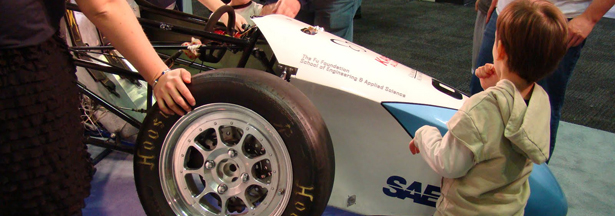

Lend a hand
Though we are fortunate enough to have the Mechanical Engineering department and the Activities Board Committee as our primary sources of funding, successfully running an Ivy League racing team requires much more than dedicated members and the budget we are currently allocated through the University. As the costs associated with building a racecar rise and with the economy still struggling, we need your help. Many of the expenses we incur are not covered by Columbia University and we rely on our sponsors and our members to help fund the team. Any financial contribution to Knickerbocker Motorsports would be highly appreciated and it will allow our team to focus our efforts on engineering the best racecar we can. It is also important to realize that any donation made either monetary or through gifts and materials are tax deductible through Columbia University's 501©(3) tax code.
Ways to donate
Online
Columbia University provides an online website to donate. Under School or Division, choose "Engineering and Applied Sciences (SEAS), the Fu Foundation School". Under the designation, choose "Other". On the next page, be sure to put "Mechanical Engineering - Knickerbocker Motorsports gift" for Comments/Special Instructions. The online process allows for both recurring and one-time donations. Recurring donations can even be set to a specific interval of your choice. We thank all of our supporters for their continued generosity.
Checks By Mail
All checks need to be payable to "Columbia University", with "Knickerbocker Motorsports Gift" written in the memo.
Make sure that your name and address are on the check to receive tax deductions.
Please postmark to:
Sandra Morris,
Mechanical Engineering, Columbia University,
500 W. 120 Street, Room 220 Mudd
New York, NY 10027
Company Donations
Companies are strongly encouraged to match donations made to Knickerbocker Motorsports by their employees. For more information about this please contact Knickerbocker Motorsports' Treasurer Vinny Nimmagadda at vn2177@columbia.edu.
